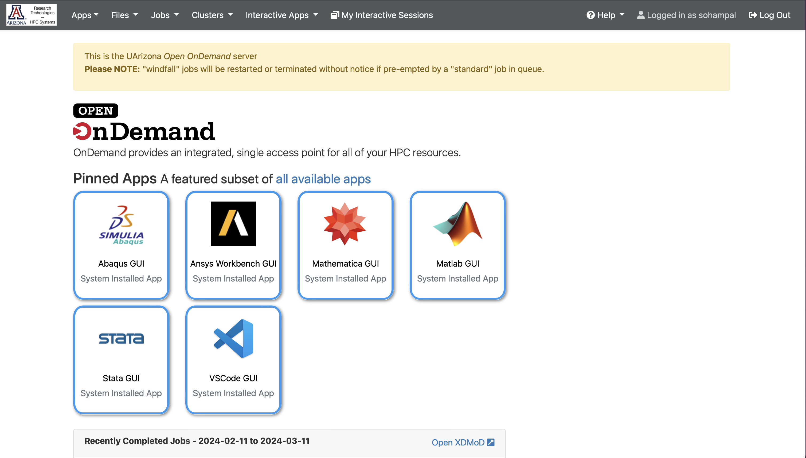
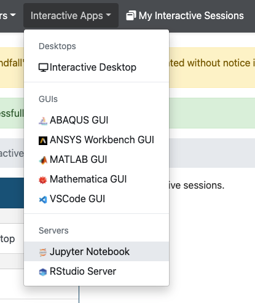
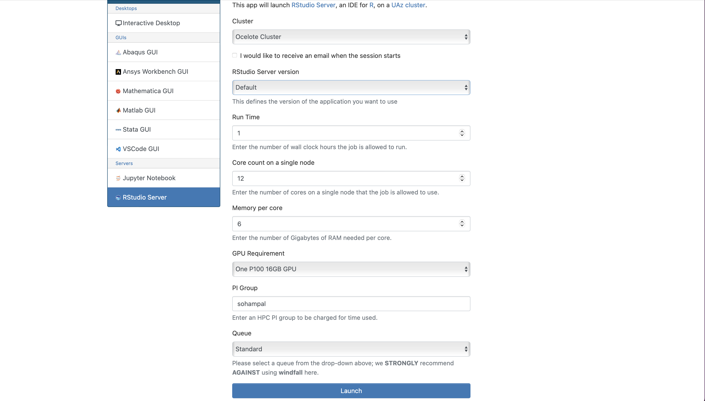
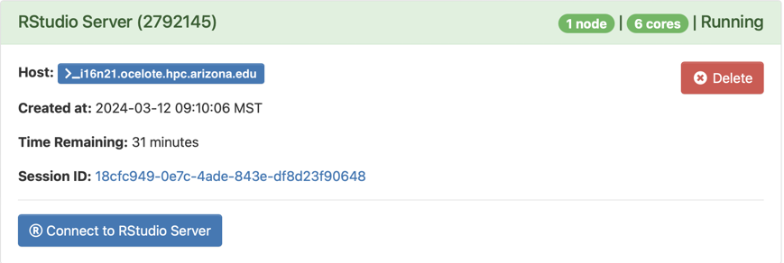
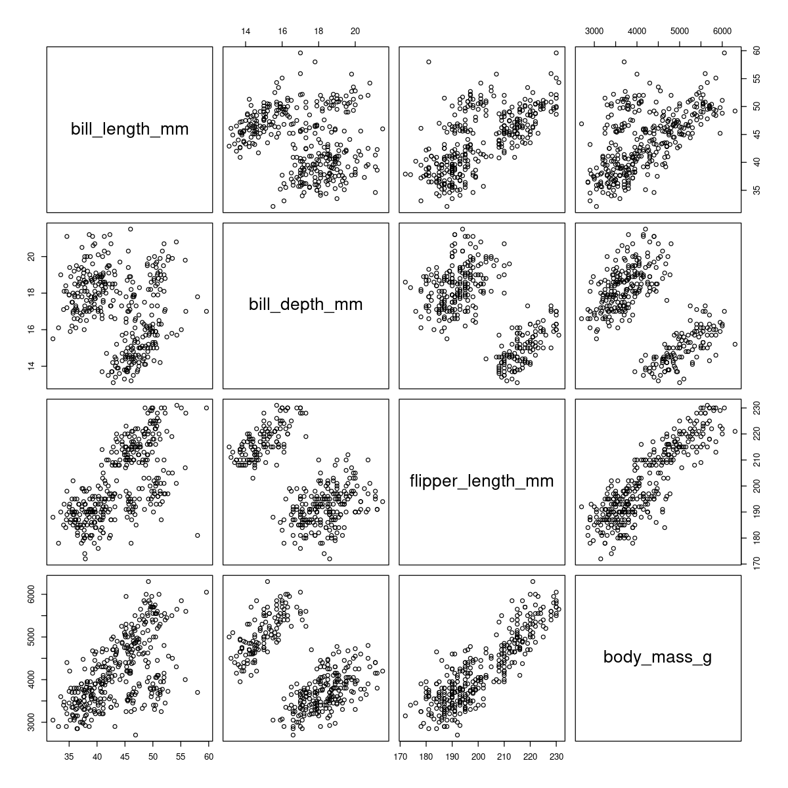
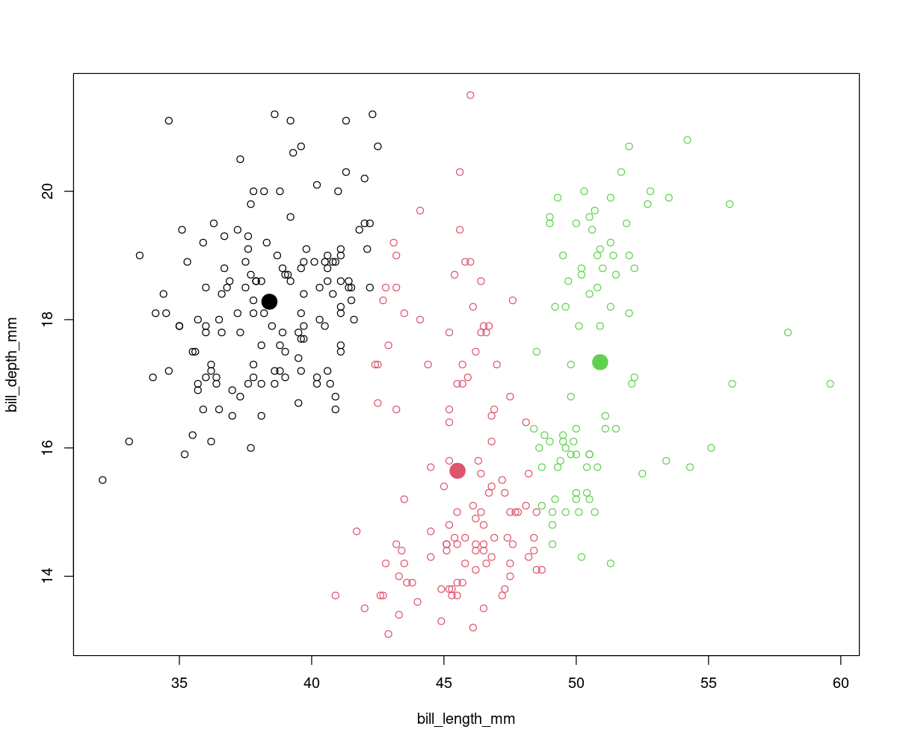

Intro to Machine Learning with R on HPC
We will discuss a few hands-on examples of machine learning with R. You can run these in a RStudio notebook, or using a batch script (see Intro to HPC). Here we emphasize on using RStudio notebooks. We recommend that you try these hands-on examples.
Why use R for machine learning?
- R has been the quintessential language for Statistics for a while
- Comes batteries included -- tons of datasets and data visualization tools
- RStudio & Shiny provide an excellent platform to develop and share your code
- Most HPC consultants are familiar with R
Things to look out for
The popularity of R also means that there are a lot of moving pieces. Sometimes, that can complicate your workflow. For machine learning with R on HPC, keep the following in mind:
- Don't mix R versions
- Bazillion packages to do the same thing, but not all equally efficient (1)
- Installing packages on HPC clusters can sometimes be non-trivial (2)
- Using GPUs might need some extra configuration
- Not all R package managers play well with HPC environments
- Use packages from the
tidyverseuniverse if possible. However to keep things simple we will not usetidyversepackages in this workshop, but we highly recommend that you look them up if you are using R for data-based research. - Read the section on R in our docs.
Setting up R for machine learning on HPC
- R and RStudio are already installed on HPC
- Read the section on R in our docs to troubleshoot package installation issues
Access RStudio from OOD
- Navigate to https://ood.hpc.arizona.edu/. After login, you will see the OOD dashboard. 
- Select Interactive Apps, and then from the drop-down menu select RStudio Server. 
- Fill in the details in the form that opens up (1), and select Launch. 
- After the session becomes available, select Connect to RStudio Server (2). 
- Use your PI's group's name for the PI Group field. You can find out your PI's group's name by running
vain a terminal session. -
- After you select Launch in the previous step, OOD will take you to a page with a tile that shows your pending job. When it's first submitted, its status will show as Queued. Once it starts, it's status will change to Running and you'll see the Connect to RStudio Server link.
Examples
Incomplete datasets
Realistic datasets, like R's airquality dataset, often come with missing values. Not all machine learning models/algorithms are capable of dealing with datasets with missing values. Semi-supervised learning is a machine learning method that can deal with certain missing data. A more universal approach is to clean the dataset. Among other things this can involve:
- Removing observations with missing entries
- Filling the missing entries with token values
Which method you choose will depend on the problem you are trying to solve. In this example we will look at some of the tools that R's provides to help you clean the data.
The airquality dataset is part of the standard GNU R distribution. You can access it with the constant airquality. Instead of loading the whole dataset, we will just view the top 5 rows with the head function. (1)
- The
headfunction is useful to quickly glimpse the first \(N\) rows of the dataset, without loading the whole dataset.
head(airquality, 5)
Ozone Solar.R Wind Temp Month Day
1 41 190 7.4 67 5 1
2 36 118 8.0 72 5 2
3 12 149 12.6 74 5 3
4 18 313 11.5 62 5 4
5 NA NA 14.3 56 5 5
The dataset has 6 columns. On the fifth row there are two NA entries. R uses NA (Not Available) to indicate missing values. Thus the airquality dataset is missing values. While in this case we easily found out that this dataset is incomplete, head in general is not a good way to detect if there are missing values. (1)
- Can you think why
headis not a good missing value detector?
R comes with other tools to detect missing values. One of the is is.na, which tells you if a quantity is NA or not. It returns TRUE if a quantity is NA else false.
is.na(c("a", 5, NA))
[1] FALSE FALSE TRUE
You can combine is.na with the functions which and sum to see if, where, and how many NA quantities are there. (1)
- Find out what other tools R provides to detect missing values.
which(is.na(airquality)) # (1)!
- Check what happens when you add the
arr.ind=TRUEargument.
[1] 5 10 25 26 27 32 33 34 35 36 37 39 42 43 45 46 52 53 54 55
[21] 56 57 58 59 60 61 65 72 75 83 84 102 103 107 115 119 150 158 159 164
[41] 180 249 250 251
There are 44 missing values, and the numbers not in brackets indicate the rows where the missing values are (we have already seen that there are two missing values in row 5). If you do not care where the missing values are you can run sum(is.na(airquality)) which will tell you the number of missing values. This can be useful to determine if you should drop the observations (rows) with the missing values. If dropping incomplete observations do not substantially decrease the size of your dataset then dropping them is a good option. Otherwise you might want to consider alternative solutions.
sum(is.na(airquality)) / nrow(airquality)
[1] 0.2875817
Dropping the incomplete observations will reduce the airquality dataset by little less than 30%. This is actually an upper bound on the amount of data loss, because some rows have multiple missing entries. Whether a 30% decrease is significant or not will depend on the problem you are trying to solve and the data you have. Here we will see how we can drop incomplete observations. (1)
- Find out how to fill in the missing entries instead of dropping the incomplete observations.
airquality_no_na <- na.omit(airquality)
sum(is.na(airquality_no_na))
[1] 0
Sometimes it is actually better to first visualize the dataset, including the distribution of the missing data. We will not go into that in this workshop. But we recommend that you check out packages like visdat and VIM which provide advanced functionality to visualize missing data.
Clustering 🐧
In this example we will cluster penguins into groups based on their bill features. We will use the Palmer penguins dataset.

Artwork by @allison_horst
Accessing the data
The R package palmerpenguins provides the data, along with some other goodies. You can just download the data file from the sources mentioned in the link above. But it's much easier to use the packaged version. Note that while the package is called palmerpenguins the dataset itself is named penguins.
install.packages("palmerpenguins")
library(palmerpenguins)
Visualizing the data
summary(penguins)
species island bill_length_mm bill_depth_mm
Adelie :152 Biscoe :168 Min. :32.10 Min. :13.10
Chinstrap: 68 Dream :124 1st Qu.:39.23 1st Qu.:15.60
Gentoo :124 Torgersen: 52 Median :44.45 Median :17.30
Mean :43.92 Mean :17.15
3rd Qu.:48.50 3rd Qu.:18.70
Max. :59.60 Max. :21.50
NA's :2 NA's :2
flipper_length_mm body_mass_g sex year
Min. :172.0 Min. :2700 female:165 Min. :2007
1st Qu.:190.0 1st Qu.:3550 male :168 1st Qu.:2007
Median :197.0 Median :4050 NA's : 11 Median :2008
Mean :200.9 Mean :4202 Mean :2008
3rd Qu.:213.0 3rd Qu.:4750 3rd Qu.:2009
Max. :231.0 Max. :6300 Max. :2009
NA's :2 NA's :2
The summary function is very handy to get an overall sense of a dataset. Often starting the exploration of your dataset with summary and head along with some visualizations is a good idea. (1)
- Look at the last row of each column in the output of
summary. Do you see something useful?
There are three unique species of penguins in the dataset. It might be tempting to think that there are three clusters in the dataset - one for each species. However, that need not be the case. Even if there are three clusters, they might not necessarily overlap with any species. Whether the clusters correspond to species will depend on the variance in intra-species differences and the variance in inter-species differences.
In addition to "species" there are three other categorical variables - "island", "sex", and "year". The remaining four are continuous variables. Plotting the categorical variables against each other will not give much useful information. We will plot the continuous variables.
cat <- c("species", "island", "sex", "year")
plot(penguins[, !(names(penguins) %in% cat)])

The figure above shows that only when we plot bill_length_mm vs bill_depth_mm, or bill_length_mm vs flipper_length_mm we see more than two clusters. This does not mean that there are not more that two clusters. It just means that in two-dimensions these are the only two cases where we see hints of more two clusters.
K-means clustering
Clustering is an unsupervised machine learning process, we do not provide any labels when we train the model. This is unlike the next examples, where we provided the labels. What this means is that a clustering model will not be able to tell if a particular cluster corresponds to a penguin species (or any other suitable label depending on the problem), but it will show the clusters that are there in the dataset.
In K-means clustering the dataset is partitioned into K clusters, and each observation belongs to the cluster with the nearest mean (also known as centroid). The stats module of R comes with an implementation of K-means. See A K-means clustering algorithm for more information on the algorithm used in R's implementation of K-means clustering. K-means while one of the most popular clustering methods comes with the caveat that we have to choose K. The algorithm will then find those K clusters. There is no standard way to decide on a value of K. To keep things simple, here we will look at the bill_length_mm vs bill_depth_mm subset of the penguins dataset, which has at least two clusters.
df <- data.frame(penguins$bill_length_mm, penguins$bill_depth_mm) # (1)!
df <- na.omit(df)
cl <- kmeans(df, 3, nstart=10) # (2)!
plot(df, col=cl$cluster)
points(cl$centers, col=1:3, pch=19, lwd=10)
- An alternative way to choose columns.
- Why is
nstartnecessary? Try this with 2 clusters.

🍄 classification
In this example we are going to classify mushrooms as either edible or poisonous based on their physical features.
Accessing the dataset
The original dataset is hosted on UC Irvine's Machine Learning Repository. A version of it is also available at Brett Lantz's Machine Learning with R datasets Github repository. We will download Brett's version for this example.
download.file(
"https://raw.githubusercontent.com/stedy/Machine-Learning-with-R-datasets/master/mushrooms.csv",
destfile = "Mushroom.csv"
)
mushroom <- read.csv("Mushroom.csv", na.strings = "?")
Visualizing the dataset
This is a much larger dataset than the penguins or the airquality datasets. Without some prettier printing the outputs of summary or head might be difficult to parse visually. We will look at some other R functions to help with getting a sense of the dataset.
c(nrow(mushroom), ncol(mushroom), sum(is.na(mushroom)))
[1] 8124 23 2480
This dataset has 8124 observations and each observation has 23 features. There are 2480 missing entries. We also want to know what are these features and what type of data do they store. The more you know about the dataset the better. Often you will have to preprocess the data prior to train a machine learning model with it. Thus it useful to explore the dataset.
colnames(mushroom)
[1] "type" "cap_shape"
[3] "cap_surface" "cap_color"
[5] "bruises" "odor"
[7] "gill_attachment" "gill_spacing"
[9] "gill_size" "gill_color"
[11] "stalk_shape" "stalk_root"
[13] "stalk_surface_above_ring" "stalk_surface_below_ring"
[15] "stalk_color_above_ring" "stalk_color_below_ring"
[17] "veil_type" "veil_color"
[19] "ring_number" "ring_type"
[21] "spore_print_color" "population"
[23] "habitat"
t(sapply(mushroom, summary)) # (1)!
sapplyapplies a function over all the elements of aListorVector, andtreturns the transpose of aMatrix.
Length Class Mode
type "8124" "character" "character"
cap_shape "8124" "character" "character"
cap_surface "8124" "character" "character"
cap_color "8124" "character" "character"
bruises "8124" "character" "character"
odor "8124" "character" "character"
gill_attachment "8124" "character" "character"
gill_spacing "8124" "character" "character"
gill_size "8124" "character" "character"
gill_color "8124" "character" "character"
stalk_shape "8124" "character" "character"
stalk_root "8124" "character" "character"
stalk_surface_above_ring "8124" "character" "character"
stalk_surface_below_ring "8124" "character" "character"
stalk_color_above_ring "8124" "character" "character"
stalk_color_below_ring "8124" "character" "character"
veil_type "8124" "character" "character"
veil_color "8124" "character" "character"
ring_number "8124" "character" "character"
ring_type "8124" "character" "character"
spore_print_color "8124" "character" "character"
population "8124" "character" "character"
habitat "8124" "character" "character"
Interestingly, all the columns are categorical, and all the entries are character strings. Not all machine learning algorithms can work with character strings. You can use something like the factor function to convert those to numerical values. We will not have to do that in this example, but it is useful for you to know. The type column is our column of interest. We will take a more closer look at that.
unique(mushroom$type)
[1] "p" "e"
barplot(table(mushroom$type))
There are only two types of mushrooms, p for poisonous, and e for edible. As the dataset is fairly balanced, we have comparable numbers of poisonous and edible mushrooms. (1) We will train a machine learning model to recognize a mushroom as either poisonous or edible based on its other features. Thus the type of the mushroom will be the label, and the rest of the columns the inputs for the model.
- Besides making a graph, how can you find out if a dataset is balanced?
Naive Bayes classifier
Naive Bayes classifiers are a class of probabilistic models that try to model the distribution of inputs of a given category. They apply Bayes' theorem with the assumption of conditional independence between every pair of inputs given the value of the category variable. Despite being a class of very simple models, they are impressively good at text classification. For more information on naive Bayes classifiers, see Idiot's Bayes: Not So Stupid after All?.
To train a naive Bayes classifier, we will first randomly split the mushroom dataset into a train set containing 70% of the data, and a test set containing the remaining 30%. The train_test_split function implemented below is handy for this.
train_test_split <- function(data, ratio) {
idx <- sample(c(TRUE, FALSE), nrow(data), replace = TRUE, prob = c(ratio, 1 - ratio))
train <- data[idx, ]
test <- data[!idx, ]
return(list("train"=train, "test"=test))
}
split <- train_test_split(mushroom, 0.7)
c(nrow(split$train), nrow(split$test))
[1] 5629 2495
The naivebayes package provides a simple and efficient implementation of various naive Bayes classifiers.
install.packages("naivebayes") # (1)!
library(naivebayes)
- After installing the package, run
vignette("intro_naivebayes")to read a very nice introduction to this package, and to naive Bayes classifiers. You can also find the vignette on CRAN.
nb <- naive_bayes(type ~ ., split$train) # (1)!
pred <- predict(nb, split$test) # (2)!
tab <- table(pred, split$test$type) # (3)!
tab
type ~ .is a shorthand for indicating that thetypecolumn are the labels, and all the other columns are the inputs.- When you run this, it will give a warning. Find out how you can modify
split$testto not trigger the warning. - Apply
summarytonb,pred,tab, and see what you get.
pred e p
e 1278 130
p 8 1079
sum(diag(tab)) / sum(tab)
[1] 0.9446894
Just with this simple model we get around 94% accuracy. Try to improve it.